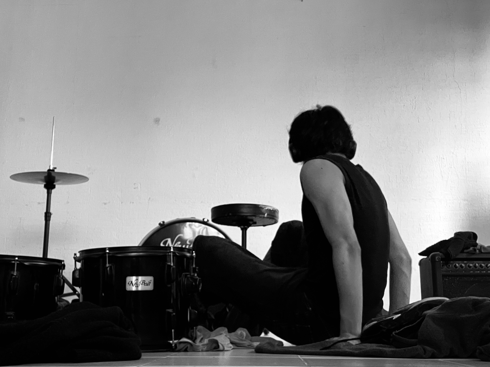
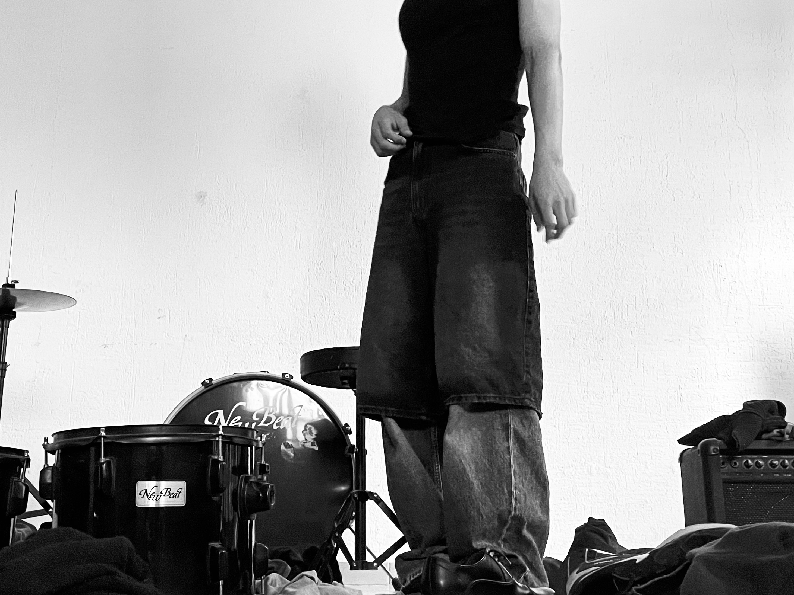
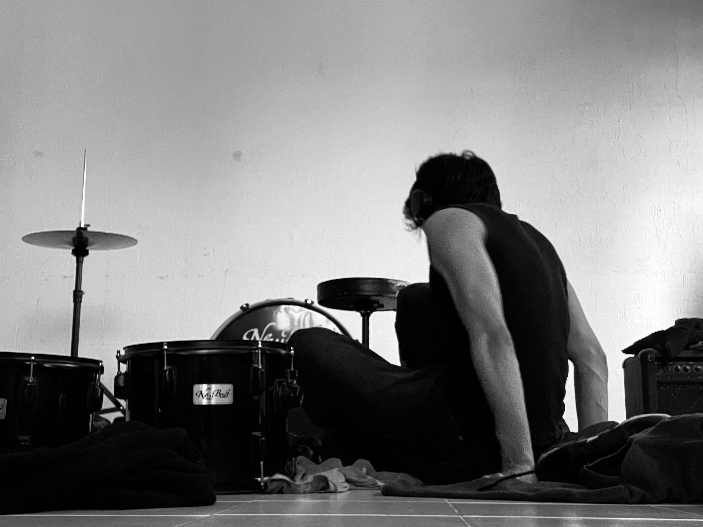

Titulo: Escencia.
Año: 2025.
Técnica: Fotografía digital.
Lugar: Lerma de Villada, Estado de México.
Descripción: La escencia de alguien cambia el entorno.
Titulo: Escencia.
Año: 2025.
Técnica: Fotografía digital.
Lugar: Lerma de Villada, Estado de México.
Descripción: La escencia de alguien cambia el entorno.



Titulo: Tengo mucho ruido
Año: 2025
Lugar: San Pedro Huitzizilapan, Estado de México.
Descripción: Nace a partir de reflejar lo que sucede en mi cabeza, un sin fin de pensamientos que me atormentan día con día y una batalla constante en silencio.